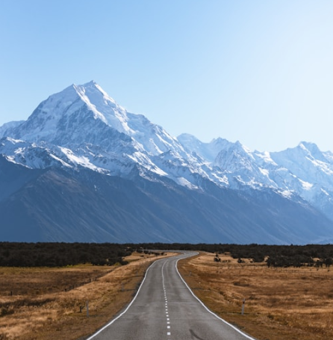

1º Projeto
Maravilhas do Norte

Tirei essa foto enquanto estava a caminho do aeroporto, e me deparei com essa paisagem. Imediatamente desci do carro e capturei esta bela imagem.

Tirei essa foto de pequenas cabanas de pescadores perto de um precipício na costa. Para mim, foi uma ótima foto, pois o ambiente e a atmosfera contribuíram para a fotografia.

Uma foto da bandeira da Islândia ao fundo de um belo céu azul, capturando a essência hospitaleira, natural e transformadora que essa viagem proporcionou.